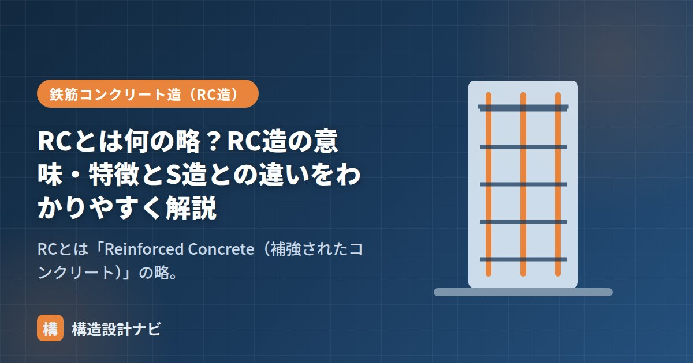

RCとは何の略？RC造の意味・特徴とS造との違いをわかりやすく解説

マンションのチラシなどでよく見る「RC造」。この記事では、RCが何の略なのかという基本から、RC造の特徴、そしてライバルの鉄骨造（S造）との違いまでをわかりやすく整理します。
RCとは「Reinforced Concrete」の略
RCは Reinforced Concrete の頭文字で、日本語では「鉄筋コンクリート」と訳します。Reinforced は「補強された」という意味で、鉄筋で補強したコンクリートを指します。これを構造体に用いた建物が「RC造（鉄筋コンクリート造）」です。
| 略号 | 英語 | 意味 |
|---|---|---|
| RC造 | Reinforced Concrete | 鉄筋コンクリート造 |
| S造 | Steel | 鉄骨造 |
| SRC造 | Steel Reinforced Concrete | 鉄骨鉄筋コンクリート造 |
| W造 | Wood | 木造 |
RC造の特徴
RC造は、圧縮に強いコンクリートと引張に強い鉄筋を組み合わせ、互いの弱点を補う構造です（仕組みは「コンクリートと鉄筋の関係」で詳説）。主な構造形式は2つです。
剛性が高く揺れにくい、遮音性・耐火性・耐久性に優れる、というのがRC造の大きな魅力です。一方で重く、大スパンが苦手で工期が長いという面もあります。詳しくは「RC造の耐震性と特徴」をご覧ください。
RC造とS造の違い
RC造を理解するには、対極にある鉄骨造（S造）と比べるのが近道です。
| 項目 | RC造（鉄筋コンクリート造） | S造（鉄骨造） |
|---|---|---|
| 主な材料 | コンクリート＋鉄筋 | 鋼材（鉄骨） |
| 重さ | 重い | 軽い |
| 剛性（揺れにくさ） | 高い ◎ | 低め |
| 遮音性 | 高い ◎ | 低め |
| 耐火性 | そのまま高い ◎ | 耐火被覆が必要 |
| スパン（柱の間隔） | 中スパン | 大スパン向き ◎ |
| 工期 | 長い | 短い ◎ |
| 主な用途 | マンション・学校・庁舎 | 工場・倉庫・体育館・高層ビル |
「重くて硬く、静かで火に強いRC造」 vs 「軽くて粘り強く、大空間と短工期のS造」。住み心地（遮音・揺れ）重視ならRC造、広い空間や高さ・スピード重視ならS造、という対比で覚えると整理しやすいです。
建物種別を検討する打合せでは、遮音性と工期のどちらを優先するかを施主に確認するようにしています。マンションなら迷わずRC造を勧めますが、工期を最優先したい案件では、同じ用途でもS造を提案することがあります。
仕組みの詳細は「コンクリートと鉄筋の関係」、弱点は「コンクリートの弱点」、耐震性は「RC造の耐震性と特徴」、S造は「鉄骨造のメリット・デメリット」をどうぞ。
鉄筋とコンクリートの役割分担（図解）
RC造がなぜ成立するのかは、梁の断面を見るとよくわかります。曲げを受ける梁では、上下で正反対の力が働いています。
コンクリートは圧縮には強いものの、引張に対しては圧縮の10分の1程度の強度しかありません。そこで引張が生じる側に鉄筋を配置します。逆に鉄筋だけでは細長く座屈してしまいますが、コンクリートに包まれることで座屈が防止され、同時に錆からも守られます。両者は熱膨張率がほぼ等しいため、温度変化で内部に無理な力が生じにくいという性質も、この組み合わせが成立する重要な条件です。
RC造から派生した構造
RC造をベースに、鉄骨を組み合わせた構造もあります。名称が似ているので整理しておきましょう。
| 構造 | 構成 | 特徴・用途 |
|---|---|---|
| RC造 | 鉄筋＋コンクリート | 中低層のマンション・学校・庁舎。もっとも一般的 |
| SRC造 | 鉄骨の周りに鉄筋を配しコンクリートで包む | RC造の剛性とS造の粘りを併せ持つ。中高層マンション・ビル |
| CFT造 | 鋼管の中にコンクリートを充填 | 鋼管が拘束して高い耐力を発揮。高層建築の柱に採用 |
| PC（プレストレスト） | あらかじめ圧縮力を導入した鉄筋コンクリート | ひび割れを抑え大スパンに対応。橋梁・大空間建築 |
SRC造は、かつて中高層建築の主流でしたが、施工が複雑で工期がかかるため、近年は高強度コンクリートを用いたRC造や、CFT造を採用した鉄骨造に置き換わる傾向があります。PC（プレストレストコンクリート）は、あらかじめ鋼材で圧縮力をかけておくことでコンクリートの弱点である引張・ひび割れを克服する技術で、駐車場や大空間の梁など、長いスパンが必要な場面で活躍します。
よくある質問
Q1. SRC造とRC造ではどちらが地震に強いですか？
一般にSRC造のほうが、同じ断面ならより高い耐力と粘り強さを持ちます。内部の鉄骨が引張・圧縮の両方に強く、大きく変形しても急激に耐力を失いにくいためです。ただし近年は高強度コンクリートの普及により、RC造でも同等の性能を確保できるようになりました。施工の手間とコストの面から、現在は中高層でもRC造が選ばれることが増えています。
Q2. 鉄筋コンクリートの寿命はどのくらいですか？
設計上の耐用年数は、コンクリートの品質とかぶり厚さで大きく変わります。日本建築学会の基準では、一般的な建物で計画供用期間65年程度（標準）、長期的な使用を想定した場合は100年程度を目安とする考え方が示されています。実際の寿命を左右するのは、中性化や塩害による鉄筋の腐食で、これを防ぐには十分なかぶり厚さと、水セメント比を抑えた密実なコンクリートが不可欠です。
Q3. マンションの構造がRC造かどうかはどこで確認できますか？
物件資料や登記簿の建物表題部に記載されている構造欄で確認できます。「鉄筋コンクリート造」「鉄骨鉄筋コンクリート造」「鉄骨造」などと明記されています。また、竣工図があれば構造図で確認できます。壁式構造かラーメン構造かは、室内の隅に柱型・梁型が出ているかどうかである程度判別でき、柱型が見えない低層マンションは壁式構造であることが多いです。
まとめ
- RCは「Reinforced Concrete（鉄筋で補強したコンクリート）」の略。
- 形式はラーメン構造と壁式構造。剛性・遮音・耐火・耐久に優れる。
- S造との違いは「重く硬く静かなRC」対「軽く大スパンで速いS」。